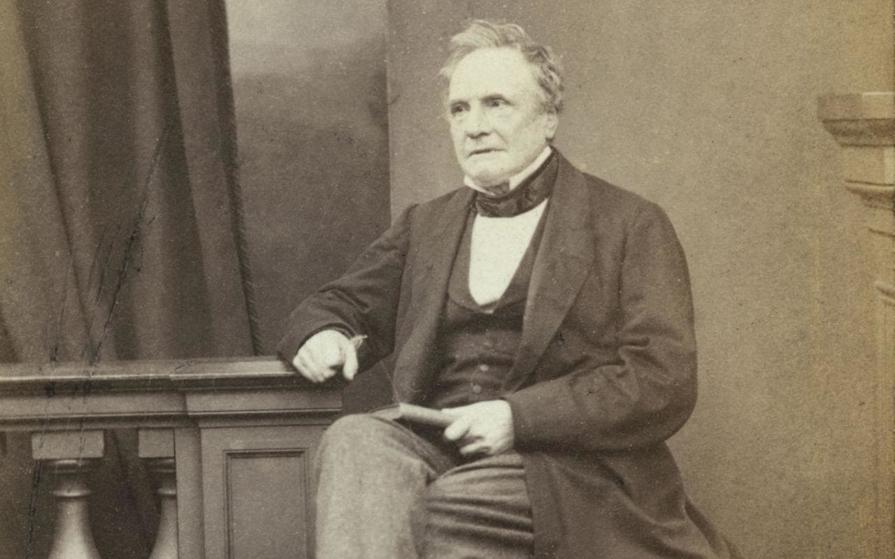

CHARLES BABBAGE
The Father Of Computers

"A tool is usually more simple than a machine;
it is generally used with the hand,
whilst a machine is frequently moved by animal or steam power."
Charles Babbage(26 December 1791 – 18 October 1871) was an English polymath. A mathematician, philosopher, inventor and mechanical engineer, Babbage originated the concept of a digital programmable computer.
Considered by some to be a "father of the computer", Babbage is credited with inventing the first mechanical computer that eventually led to more complex electronic designs, though all the essential ideas of modern computers are to be found in Babbage's analytical engine. His varied work in other fields has led him to be described as "pre-eminent" among the many polymaths of his century.
Babbage's birthplace is disputed, but according to the Oxford Dictionary of National Biography he was most likely born at 44 Crosby Row, Walworth Road, London, England. A blue plaque on the junction of Larcom Street and Walworth Road commemorates the event.
His date of birth was given in his obituary in The Times as 26 December 1792; but then a nephew wrote to say that Babbage was born one year earlier, in 1791. The parish register of St. Mary's Newington, London, shows that Babbage was baptised on 6 January 1792, supporting a birth year of 1791.
1791
December 26 Birth in London
1811
Entered Trinity College, Cambridge
1812
Transferred to Peterhouse, Cambridge
1814
Received an honorary degree without examination from Peterhouse
1814
Married Georgiana Whitmore, they had eight children, but only three lived to adulthood
1816
Elected a Fellow of the Royal Society and founded the Astronomical Society
1817
Received MA from Cambridge
1820
Founded the Analytical Society with John Herschel and George Peacock
1821
Began work on the Difference Engine, intended to compile and print mathematical tables
1822
He first discussed the principles of calculating engine in a letter to Sir Humphrey
1827
Published a table of logarithms from 1 to 108000
1827
Babbage’s father, wife, and one son died
1828
Appointed to the Lucasian Chair of Mathematics at Cambridge
1831
Founded the British Association for the Advancement of Science
1832
A small portion of the Difference Engine, completed by Babbage’s engineer, Joseph Clement
1832
The British government suspended funding for his Difference Engine
1832
Published “Economy of Manufactures and Machinery”
1833
Began work on the Analytical Engine, intended to perform any mathematical task
1833
Ada Augusta Lovelace begins documentation of Babbage’s calculating machines
1834
Founded the Statistical Society of London
1842
“Sketch of the Analytical Engine” by Luigi F. Menebrea published
1843
In the “Notes” Ada described how the Analytical Engine could be programmed
1854
George Schertz, constructed a machine based on the designs for the Difference Engine
1856
Design of the Analytical Engine completed, uses Jacquard’s punch card idea for programming
1864
Published “Passages from the Life of a Philosopher”
1871
Charles Babbage Died on October 18, 1871 in London, England
1985
Science Museum of London launched a project to build a complete Babbage Engine
Plan 28
In 2011, researchers in Britain proposed a multimillion-pound project, "Plan 28", to construct Babbage's Analytical Engine. Since Babbage's plans were continually being refined and were never completed, they intended to engage the public in the project and crowd-source the analysis of what should be built. It would have the equivalent of 675 bytes of memory, and run at a clock speed of about 7 Hz. They hope to complete it by the 150th anniversary of Babbage's death, in 2021
Babbage`s Family
On 25 July 1814, Babbage married Georgiana Whitmore at St. Michael's Church in Teignmouth, Devon; her sister Louisa married Edward Ryan.s The couple lived at Dudmaston Hall, Shropshire (where Babbage engineered the central heating system), before moving to 5 Devonshire Street, London in 1815
Charles and Georgiana had eight children, but only four – Benjamin Herschel, Georgiana Whitmore, Dugald Bromhead and Henry Prevost – survived childhood. Charles' wife Georgiana died in Worcester on 1 September 1827, the same year as his father, their second son (also named Charles) and their newborn son Alexander.